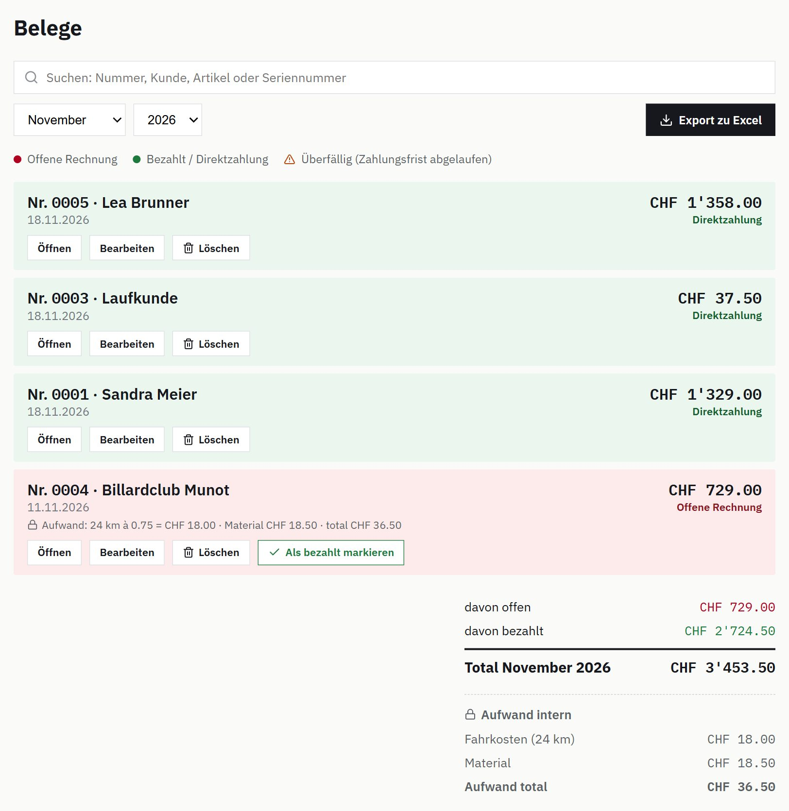
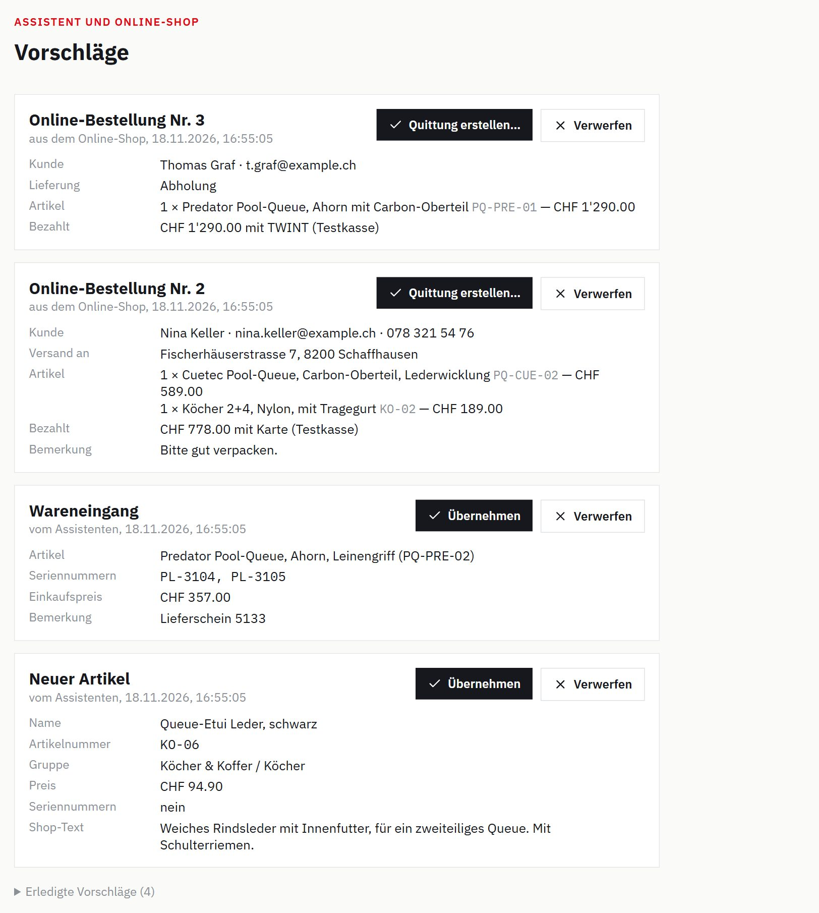
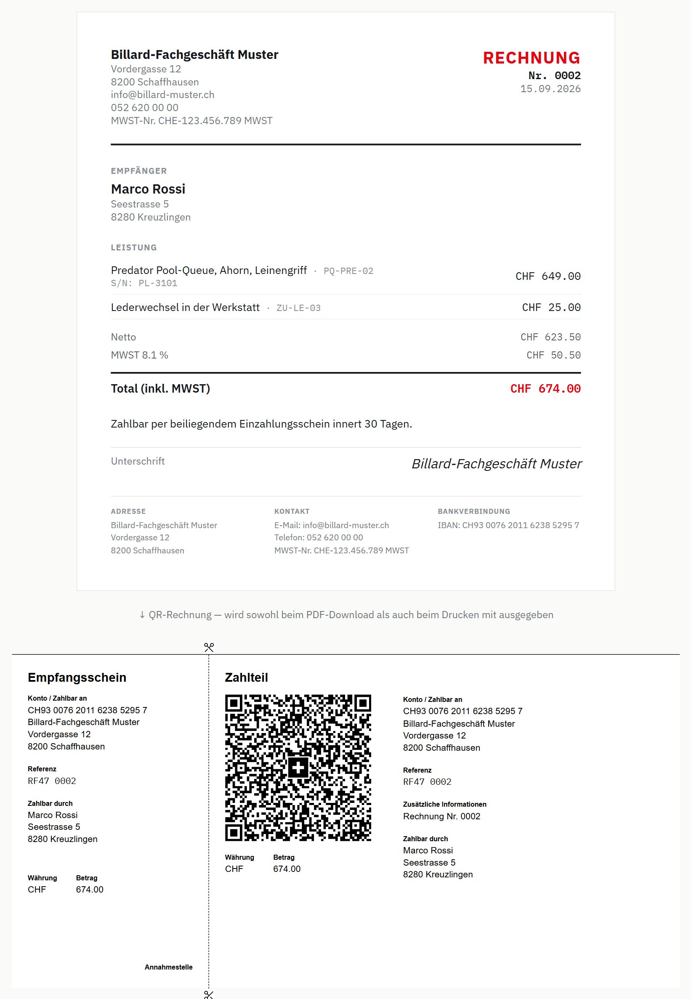
Jeder Screenshot hat farbige, nummerierte Markierungen. Die Legende daneben erklärt jedes markierte Element.
Jeder Teil hat eine eigene Farbe, von Grundlagen (blau) bis Betrieb (orange). So findest du dich im Ausdruck schnell zurecht.
Windows gibt es nur in der Windows-Version, Web nur in der Web-App. Alles andere gibt es in beiden.
Teil A und B: Verkaufen, Belege, Kunden und Lager. Ohne technische Vorkenntnisse lesbar.
Teil C bis F: Einstellungen, Shop- und KI-Anbindung mit Schnittstellen-Referenz, Betrieb und Fehlerbehebung.
Alle Bildschirmfotos stammen aus Qwui 1.4.0 mit erfundenen Beispieldaten. Die Abläufe wurden echt durchgespielt: Verkauf, Wareneingang, Shop-Bestellung, Assistenten-Vorschlag und automatische Sicherung.
Qwui ist die Kassen-, Beleg- und Lagersoftware für kleine Schweizer Fachgeschäfte und Dienstleister. Du erstellst damit Quittungen und Rechnungen mit Schweizer QR-Einzahlungsschein, verwaltest Kunden, führst das Lager mit Seriennummern und behältst offene Rechnungen im Blick. Die Windows-Version verbindet zusätzlich den eigenen Online-Shop und einen KI-Assistenten, der auf Wunsch komplett auf dem eigenen PC läuft.
Kasse, Lager, Belege und Online-Shop nutzen dieselben Daten. Ein Verkauf im Laden senkt den Bestand im Shop, eine Shop-Bestellung wird in Qwui zur Quittung.
Online-Bestellungen und Vorschläge des Assistenten bucht Qwui nie selbst. Sie warten unter «Vorschläge» auf deinen Klick.
Die Windows-Version speichert alles lokal und ist aus dem Internet nicht erreichbar. Verbindungen gehen nur von Qwui hinaus.
Jede Lagerbewegung steht im Protokoll. Änderungen an Quittungen werden storniert und neu gebucht.
| Web-App Web | Windows-Version Windows | |
|---|---|---|
| Läuft | im Browser auf jedem Gerät, als App installierbar (PWA) | als einzelne Qwui-1.4.0.exe, ohne Installation und Admin-Rechte |
| Daten | zentral in Cloudflare D1, Zugang mit Passwort | lokal in Qwui-Daten\qwui.db neben der exe, auch offline |
| Quittungen, Kunden, Belege, Inventar | ✓ | ✓ |
| E-Mail mit PDF-Anhang | öffnet das E-Mail-Programm | ✓ direkt per SMTP |
| Automatische Sicherung | – (manuelles Backup) | ✓ stündlich und täglich, verschlüsselt |
| Online-Shop, Assistent | – | ✓ |
| Seriennummern aus Fotos | – | ✓ mit der Texterkennung von Windows |
Daten lassen sich über eine Backup-Datei von einer Version in die andere übertragen (Kapitel 11).
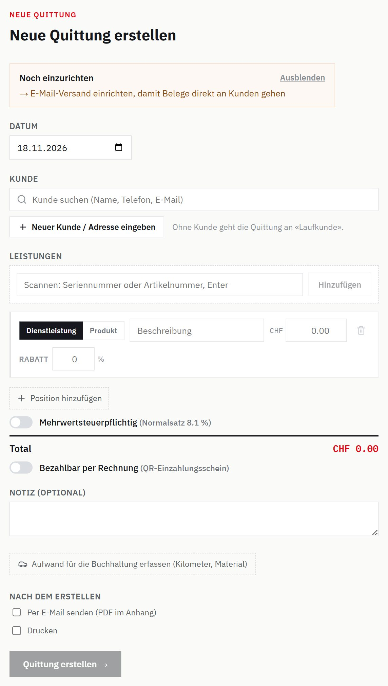
Links steht immer die Navigation, geteilt in zwei Bereiche.
| Tagesgeschäft | Wozu |
|---|---|
| Neue Quittung | verkaufen, Quittung oder Rechnung |
| Vorschläge (n) | nur wenn etwas offen ist Windows |
| Belege | Belege, Zahlungen, Mahnungen |
| Kunden | Kundenliste |
| Inventar | Artikel, Wareneingang, Lager |
| Einstellungen | Wozu |
|---|---|
| Firma | Firmendaten, Logo, IBAN |
| SMTP-Versand Windows | |
| Shop | Online-Shop Windows |
| Assistent | Sprachmodell Windows |
| Backup | Export, Import, Sicherung |
Auf schmalen Bildschirmen (Telefon) steht die Navigation als Leiste oben. Jede Seite hat oben eine rote Kennzeile und einen Titel.
/api/storage, mit Passwortqwui.db neben der exeBeide Speicher haben denselben Aufbau, einen Schlüssel-Wert-Speicher mit Firma, Kunden, Belegen, Inventar, Exemplaren und Lagerbewegungen. Die Windows-Version hat zusätzlich einen Hintergrundprozess: Er versendet E-Mails, sichert, spricht mit dem Shop und stellt die lokale Schnittstelle für den Assistenten bereit.
Im Ordner Qwui-Daten\ | Inhalt |
|---|---|
qwui.db (+ -wal, -shm) | die Datenbank mit allen Geschäftsdaten und Vorschlägen |
geheim.bin | Passwörter und Tokens, verschlüsselt mit dem Windows-Konto; auf einem anderen PC nicht lesbar |
logos\ | hochgeladene Firmenlogos |
Den Ordner Qwui-Daten immer zusammen mit der exe verschieben. Es darf nur ein Qwui-Fenster gleichzeitig laufen.
Solange etwas fehlt, zeigt Qwui oben auf Neue Quittung den Hinweis «Noch einzurichten» (siehe Bild in Kapitel 2). Diese Reihenfolge hat sich bewährt:
Windows-SmartScreen: Die exe ist nicht kostenpflichtig signiert. Beim ersten Start erscheint «Der Computer wurde durch Windows geschützt». Weitere Informationen → Trotzdem ausführen ist hier normal.
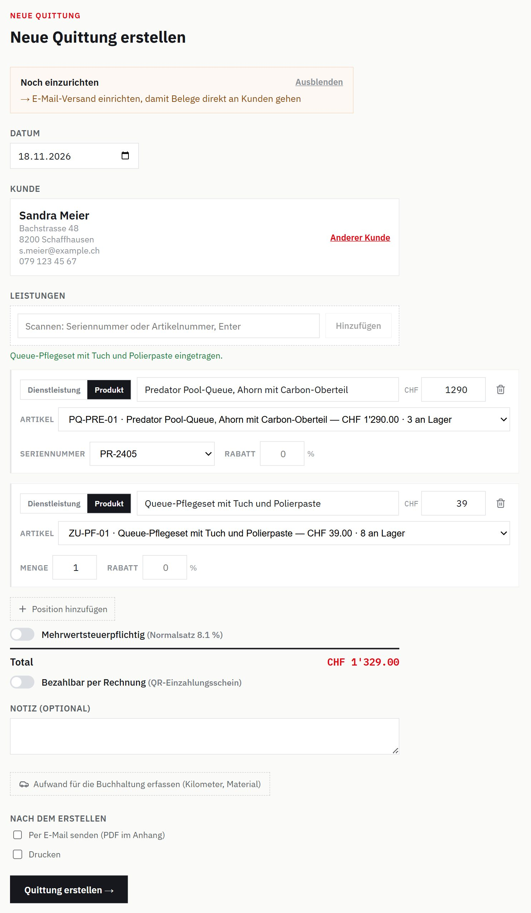
Ein Barcode-Scanner verhält sich wie eine Tastatur: Er tippt den Code und drückt Enter. Verkaufte, retournierte oder doppelt gescannte Stücke meldet Qwui sofort unter dem Feld. Bei Artikeln ohne Barcode und für Dienstleistungen füllst du die Positionen von Hand aus.
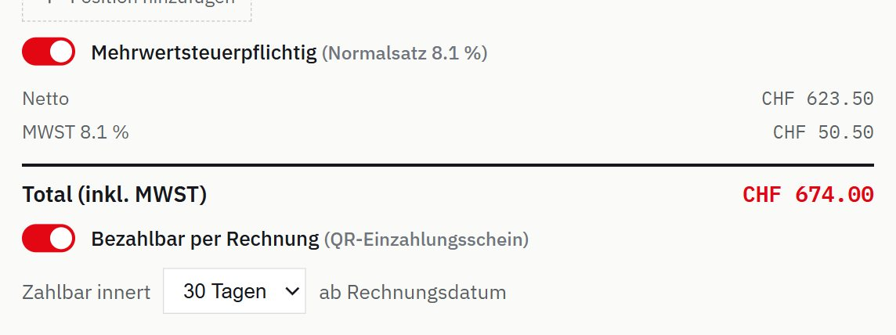
Für die Rechnung braucht es unter Firma eine gültige Schweizer oder Liechtensteiner IBAN. Eine QR-IBAN braucht es nicht: Qwui erzeugt eine Referenz nach ISO 11649 (RF…).
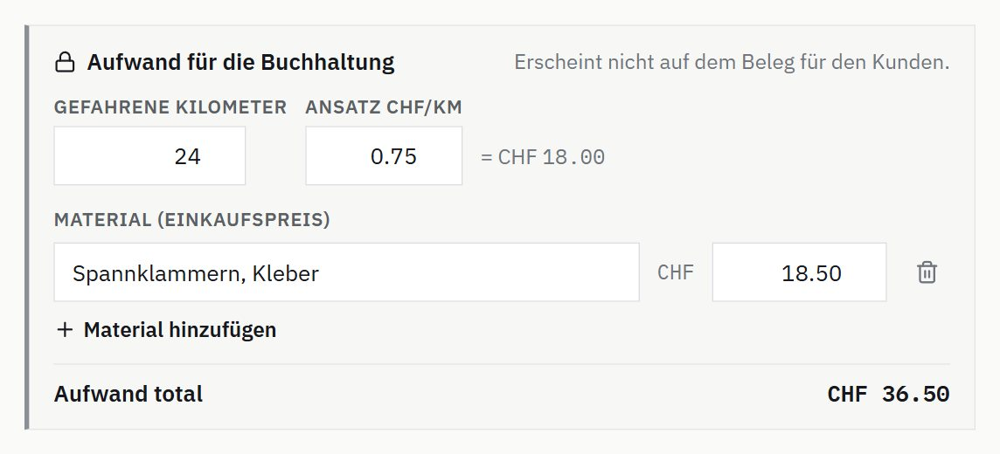
Alles in einem Schritt: Quittung, Exemplare, Bestand und Lagerbewegungen werden zusammen gespeichert. Bricht das Speichern ab, bleibt alles beim alten Stand. Unter Bestand 0 warnt Qwui, verkauft aber trotzdem.
Nach dem Erstellen und beim Öffnen eines Belegs zeigt Qwui den Beleg so, wie der Kunde ihn bekommt, mit allen Versandwegen darüber.
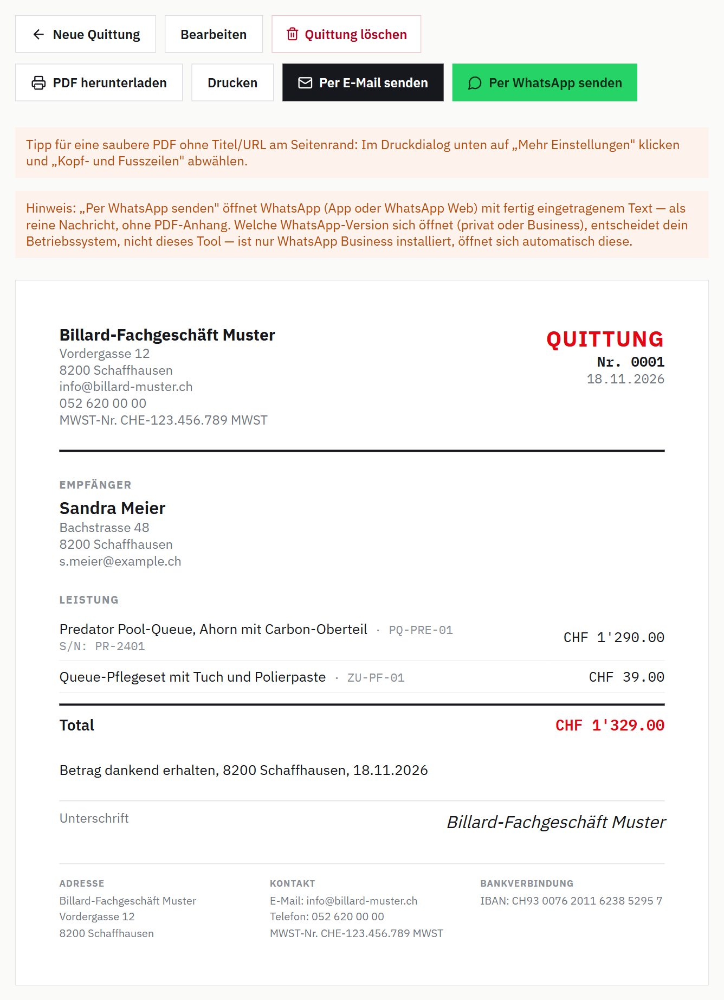
Auf Telefonen gibt es zusätzlich Teilen: Das PDF geht direkt an WhatsApp, Mail oder andere Apps.
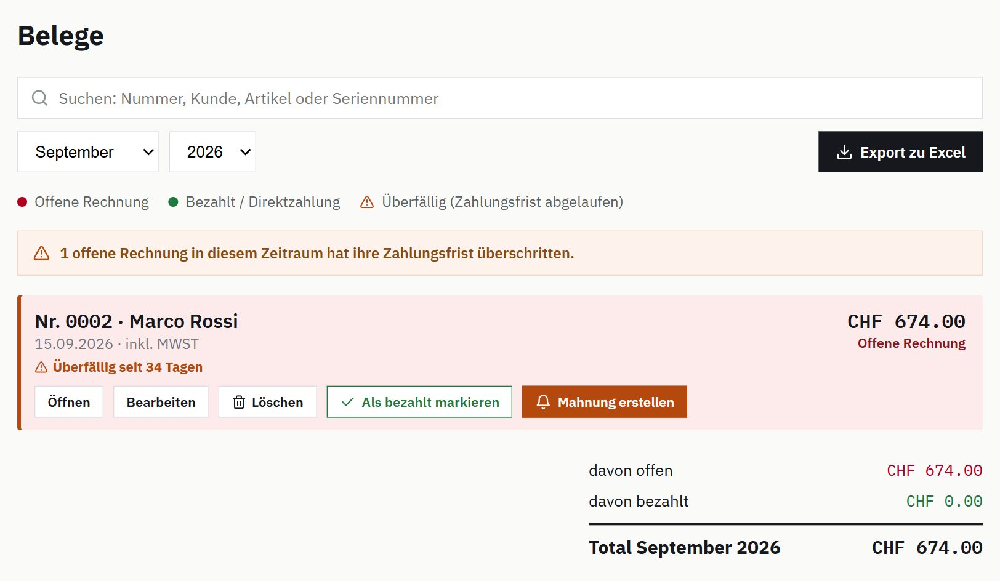
zeigt die Vorschau mit allen Versandwegen.
Qwui storniert die alte Buchung und bucht neu. Im Lagerprotokoll steht beides.
fragt nach und bucht die Ware zurück. Die Nummer wird nicht neu vergeben.
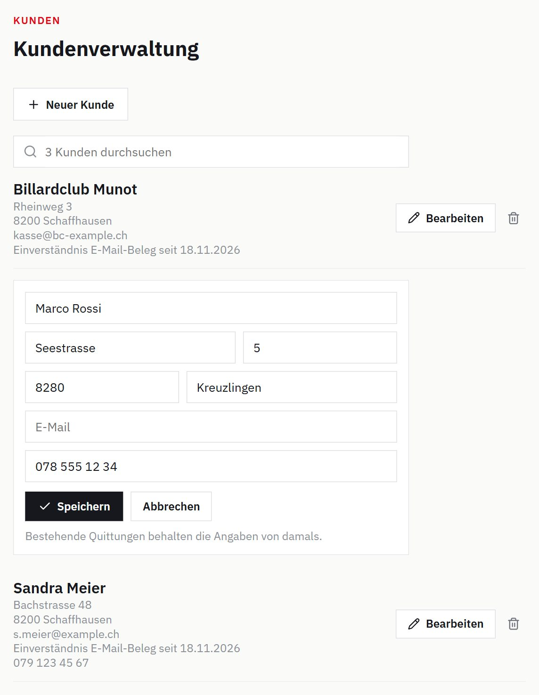
Datenschutz: Eine E-Mail-Adresse speichert Qwui nur mit Einverständnis. Ohne dient sie nur dem einen Versand. Wer im Online-Shop «Quittung per E-Mail» anhakt, hat zugestimmt.
Jeder Kunde hat eine interne Kunden-ID. Der Assistent sieht nur diese ID, nie Namen oder Kontaktdaten.
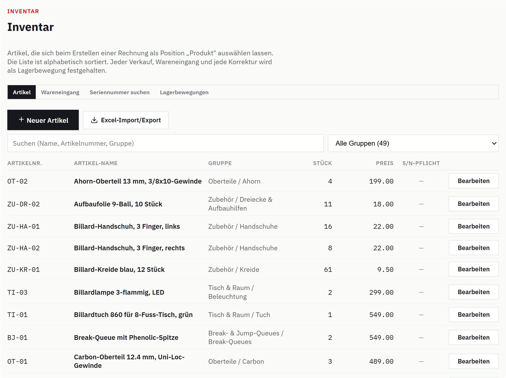
Produktgruppe mit Schrägstrich: «Pool-Queues / Predator» ergibt im Online-Shop die Kategorie «Pool-Queues» mit Unterkategorie «Predator». Eine Artikelnummer gibt es nur einmal, damit der Scanner eindeutig bleibt. Stückzahl von Hand ändern bucht Qwui als Inventurkorrektur.
Hochpreisige Einzelstücke (z. B. Queues) bekommen die S/N-Pflicht. Jedes Stück hat dann eine eigene Seriennummer und einen Status, die Stückzahl ergibt sich aus den Exemplaren an Lager. Einschalten geht bei Bestand 0, ausschalten nur ohne erfasste Exemplare.
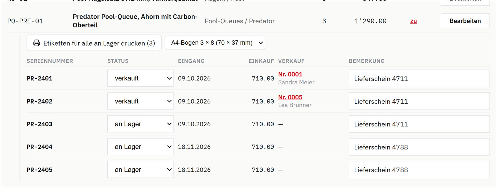
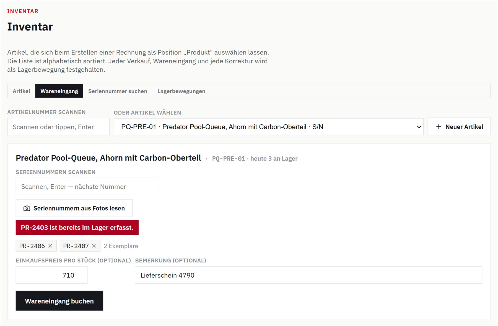
Qwui liest die Fotos mit der Texterkennung von Windows, auf diesem PC und ohne Internet. Jede Nummer erscheint neben ihrem Foto und kommt erst nach «Stimmt, übernehmen» in die Liste. Ähnliche Zeichen wie 0/O und 1/I vergleichen.
Code 128, den auch einfache Scanner lesen. Formate: Etikettendrucker 62 × 29 mm oder 57 × 32 mm, A4-Bogen 3 × 8 (70 × 37 mm). Im Druckdialog 100 % wählen.
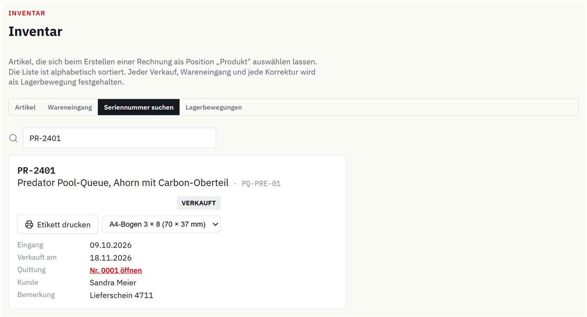
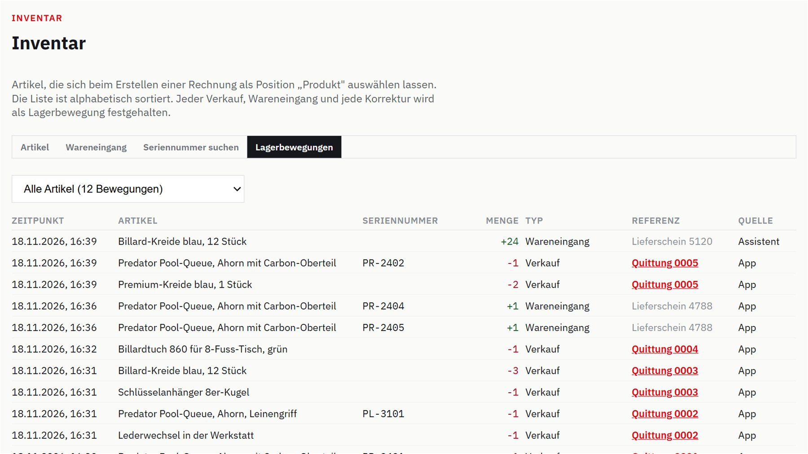
Unter Excel-Import/Export lässt sich das Inventar herunterladen und wieder einlesen. Spalten in Zeile 1:
| Produktgruppe | Artikelnummer | Artikel-Name | Stückzahl verfügbar | Preis (CHF) | Seriennummernpflichtig |
|---|---|---|---|---|---|
| Zubehör / Kreide | ZU-KR-01 | Billard-Kreide blau, 12 Stück | 40 | 9.50 | nein |
| Pool-Queues / Predator | PQ-PRE-01 | Predator Pool-Queue … | 0 | 1290.00 | ja |
Geänderte Stückzahlen bucht Qwui als Inventurkorrektur. Bei S/N-Artikeln zählt die Stückzahl-Spalte nicht; Exemplare kommen über den Wareneingang.
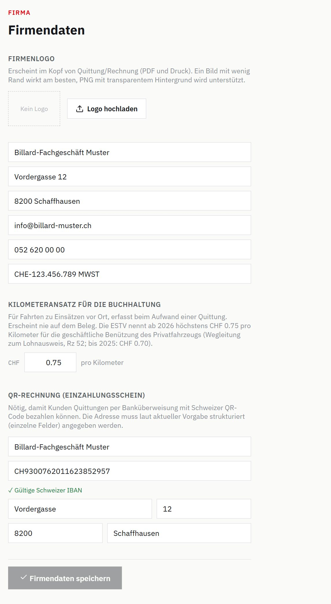
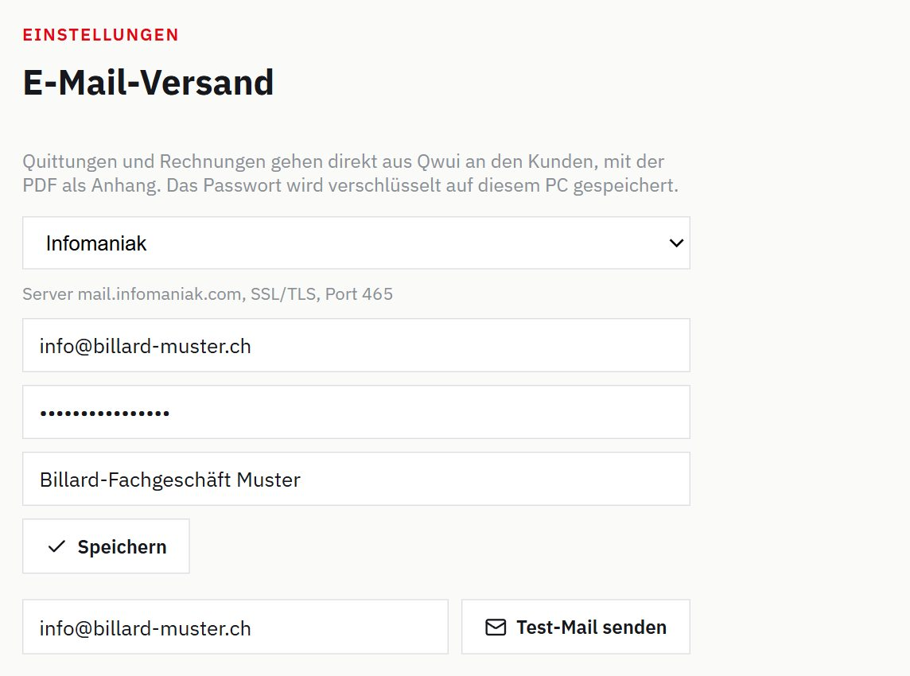
Gmail verlangt ein App-Passwort. Outlook.com/Hotmail erlaubt seit 2024 keine Passwort-Anmeldung mehr und funktioniert nicht. Bei «Anderer Anbieter»: STARTTLS meist Port 587, SSL/TLS meist Port 465.
Ob der Versand geklappt hat, steht am Beleg. Fehlermeldungen des Mailservers speichert Qwui ohne Adressen.
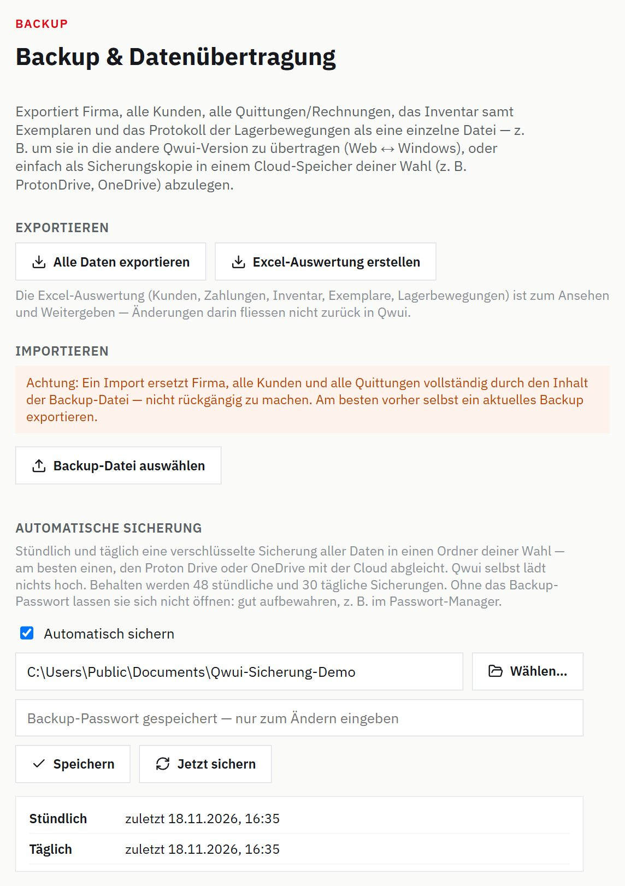
AES-256-GCM, Schlüssel per scrypt. Ohne Passwort wird nicht gesichert.
48 stündliche und 30 tägliche Sicherungen; andere Dateien im Ordner bleiben unberührt.
War Qwui geschlossen, sichert es kurz nach dem nächsten Start.
Das Backup-Passwort gehört in den Passwort-Manager. Ohne lässt sich keine Sicherung öffnen. Wiederherstellen: Backup-Datei auswählen, die .qwuibak-Datei wählen, Passwort eingeben. Die Web-App öffnet verschlüsselte Sicherungen nicht.
Der Online-Shop ist ein eigenes Projekt auf Cloudflare Pages mit eigener Datenbank. Qwui ist die einzige Quelle für Name, Preis und Bestand. Der Shop ergänzt nur, was Qwui nicht kennt: Beschreibung, Marke, Fotos, Empfehlungen. Die Verbindung geht immer von Qwui aus; Qwui bleibt aus dem Internet unerreichbar.
Artikelnummer, Name, Gruppe, Preis, verfügbare Menge, Status. Nie: Seriennummern, Einkaufspreise, Kunden, Aufwand.
Kunde, Adresse, Artikel, bezahlte Preise, Versand oder Abholung, Zahlungsart. Kartendaten sieht niemand.
abgeholt, gebucht oder verworfen. Verlorene Meldungen wiederholt Qwui.
Kein Überverkauf. Zwischen Bestellung und Buchung hält der Shop die Ware selbst zurück: Bezahlte, noch nicht gebuchte Bestellungen und begonnene Kassen (35 Minuten) zieht er vom angezeigten Bestand ab. Erst ein neuerer Feed aus Qwui löst das ab.
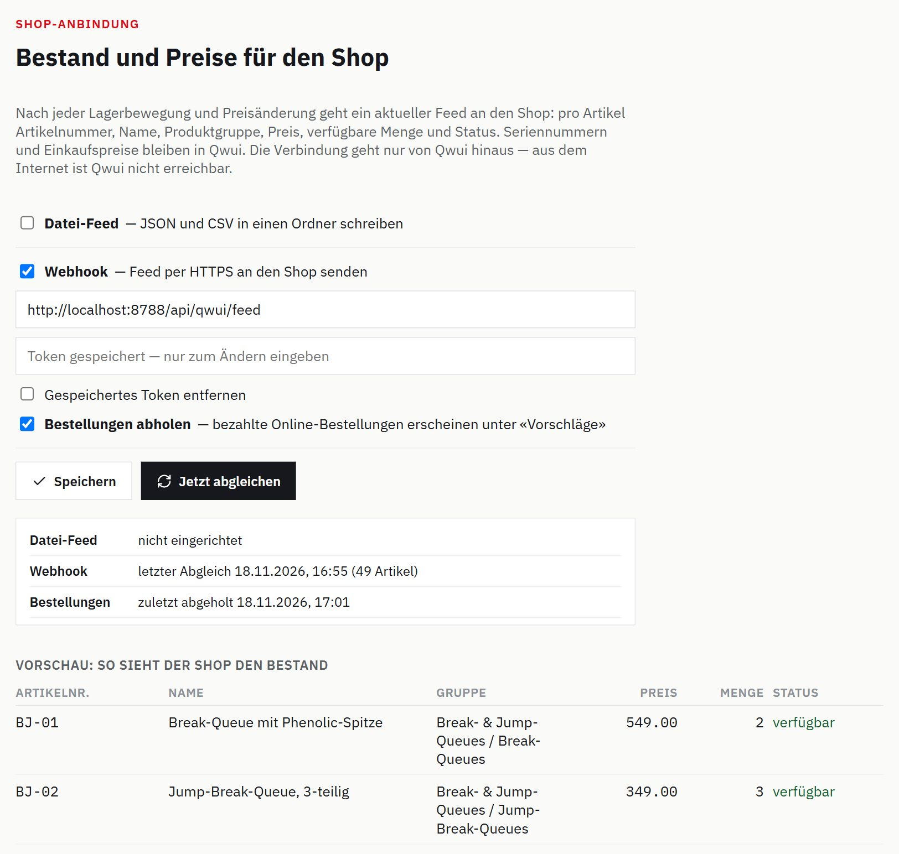
https://…/api/qwui/feed. http:// nur für localhost.QWUI_TOKEN des Shops. Verschlüsselt gespeichert.nach jeder Lagerbewegung und Preisänderung, schnelle Änderungen gebündelt (2 s). Unveränderte Feeds werden nicht erneut geschickt.
neue Versuche nach 1, 5 und 15 Minuten. Danach «Jetzt abgleichen».
Jeder Feed enthält das ganze Sortiment. Fehlende Artikel blendet der Shop aus.
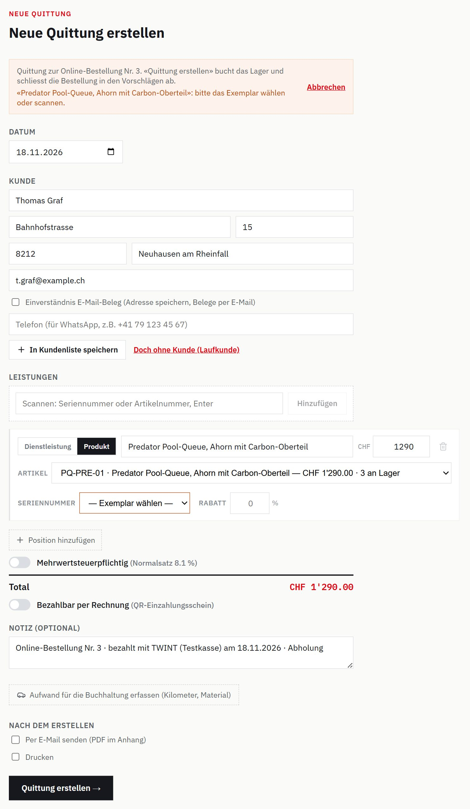
Weicht der bezahlte Preis vom Inventarpreis ab, übernimmt Qwui den bezahlten Preis und weist darauf hin. Ein Artikel, den es im Inventar nicht gibt, kommt als Dienstleistung ohne Lagerbuchung. Versandkosten stehen als eigene Position.
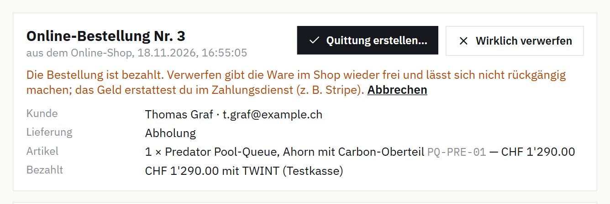
Qwui meldet «abgeholt» erst nach dem Speichern. Ist der Shop nicht erreichbar, warten Rückmeldungen in einer Warteschlange. Listet der Shop eine schon entschiedene Bestellung, meldet Qwui die Entscheidung erneut.
Ohne gültige Menge oder Preis überspringt Qwui die Bestellung und meldet sie unter Einstellungen → Shop. Die übrigen kommen trotzdem an.
Was ein Shop anbieten muss, damit Qwui mit ihm arbeitet. Der Qwui-Shop setzt genau das um; ein anderes Shopsystem kann es nachbauen.
Basis = Webhook-Adresse ohne /api/qwui/feed.
Authorization: Bearer <QWUI_TOKEN>, mind. 16 Zeichen, Vergleich in konstanter Zeit.
JSON in UTF-8, Beträge in Franken. Keine Weiterleitungen, 15 s Zeitlimit.
| Endpunkt | Zweck |
|---|---|
POST /api/qwui/feed | Qwui schickt den vollständigen Bestand |
GET /api/qwui/orders | Qwui holt bezahlte, noch nicht entschiedene Bestellungen |
POST /api/qwui/orders/{id} | Qwui meldet den Status einer Bestellung |
{ "version": 1, "generatedAt": "2026-11-18T15:36:58.425Z",
"items": [
{ "articleNumber": "ZU-KR-01", "name": "Billard-Kreide blau, 12 Stück",
"group": "Zubehör / Kreide", "price": 9.5, "available": 37, "status": "verfügbar" },
{ "articleNumber": "PQ-PRE-01", "name": "Predator Pool-Queue, Ahorn mit Carbon-Oberteil",
"group": "Pool-Queues / Predator", "price": 1290, "available": 0, "status": "ausverkauft" } ] }
→ Antwort { "ok": true, "items": 48, "skipped": 0 }
Übernommen werden Artikel mit Artikelnummer und Preis über 0, Doppelte übersprungen. version muss 1 sein. Ein Feed, der älter ist als der zuletzt angenommene, wird ignoriert.
{ "ok": true, "orders": [{
"id": "ea858311-bcd2-4ea9-8fec-777708196753", "number": 1,
"createdAt": "2026-11-18T15:37:20Z", "paidAt": "2026-11-18T15:37:21Z",
"payment": "testkasse", // stripe | testkasse "paymentMethod": "twint", // twint | card
"qwuiStatus": null, // null | "abgeholt" "delivery": "abholung", // versand | abholung
"note": "Hole es am Samstag ab.",
"customer": { "name": "Lea Brunner", "email": "lea.brunner@example.ch", "phone": "079 444 55 66",
"street": "Mühlentalstrasse", "houseNumber": "20", "postalCode": "8200",
"city": "Schaffhausen", "receiptByEmail": true },
"items": [ { "articleNumber": "PQ-PRE-01", "name": "Predator Pool-Queue …", "quantity": 1, "price": 1290 },
{ "articleNumber": "ZU-KR-02", "name": "Premium-Kreide blau, 1 Stück", "quantity": 2, "price": 34 } ],
"shipping": 0, "total": 1358 }] }
Nur Bestellungen mit Status «bezahlt» und qwuiStatus leer oder «abgeholt». Enthält Namen und Adressen, deshalb nur mit Token. Qwui prüft jede Position: Menge ganzzahlig 1–999, Preis vorhanden.
{ "status": "abgeholt" }
{ "status": "gebucht", "bookedAt": "2026-11-18T15:39:02Z" }
{ "status": "verworfen" }
bookedAt ist bei «gebucht» Pflicht: Bis ein neuerer Feed ankommt, hält der Shop die Menge zurück. Übergänge: «abgeholt» nur von leer; «gebucht» und «verworfen» von leer, «abgeholt» oder demselben Status.
| Code | Bedeutung | Was Qwui macht |
|---|---|---|
| 200 | ok; Wiederholung desselben Status: {"ok":true,"unchanged":true} | Eintrag aus der Warteschlange entfernen |
| 400 | ungültige Anfrage | Fehler im Status anzeigen |
| 401 | Token fehlt oder falsch | «Der Shop lehnt das Token ab.» |
| 404 | unbekannte Bestellung | Rückmeldung gilt als erledigt |
| 409 | schon anders entschieden | Rückmeldung gilt als erledigt |
| 503 | QWUI_TOKEN im Shop fehlt oder zu kurz | neuer Versuch beim nächsten Mal |
| 5xx / Netz | Shop gestört | Feed: 1/5/15 Min.; Rückmeldungen bleiben in der Warteschlange |
Der Qwui-Shop (eigenes, nicht öffentliches Projekt) bietet zusätzlich: Verwaltung unter /admin mit eigenem ADMIN_TOKEN; Stripe Checkout mit TWINT und Karte oder eine Testkasse; Preise kommen immer aus der Datenbank, nie vom Browser; mit SITE_PASSWORD verlangt er vor dem Start ein Passwort vor jeder Seite. Qwui-Schnittstelle, Verwaltungs-API und Stripe-Webhook brauchen es nicht.
Mit dem Assistenten fragst du Qwui in normaler Sprache: «Wie viele Predator-Queues haben wir noch?», «Was lief diesen Monat am besten?», «Erfasse 24 Kreiden vom Lieferschein 5120.» Das Sprachmodell nutzt dafür acht Werkzeuge, die Qwui bereitstellt.
Model Context Protocol: offener Standard, über den Sprachmodell-Programme Werkzeuge nutzen. LM Studio, Claude Desktop und viele andere verstehen ihn.
bietet die Werkzeuge per MCP an und reicht jede Anfrage an Qwui weiter. Steckt in der Datei Qwui-Assistent.mcpb, die Qwui erzeugt.
Schreibende Werkzeuge legen nur Vorschläge an. Gebucht wird erst mit «Übernehmen», mit Quelle «Assistent» im Protokoll. Verkaufen, löschen, Preise ändern: unmöglich.
Keine Namen, Adressen, E-Mails, Telefonnummern, nur Kunden-IDs. Einkaufspreise und Aufwand sind nicht abrufbar.
Standardmässig aus, nur 127.0.0.1, mit Token. Anfragen aus dem Browser und unter fremdem Hostnamen werden abgewiesen.
Jeder Zugriff steht mit Zeit, Werkzeug und Ergebnis im Protokoll.
Lokal oder Cloud? Mit einem lokalen Modell (Kapitel 18) bleiben alle Daten auf dem PC, auch offline. Mit Claude Desktop (Kapitel 19) gehen die Werkzeug-Ergebnisse, also Geschäftszahlen wie Bestand und Umsatz, an Anthropic. Kundennamen gibt Qwui in beiden Fällen nicht heraus.
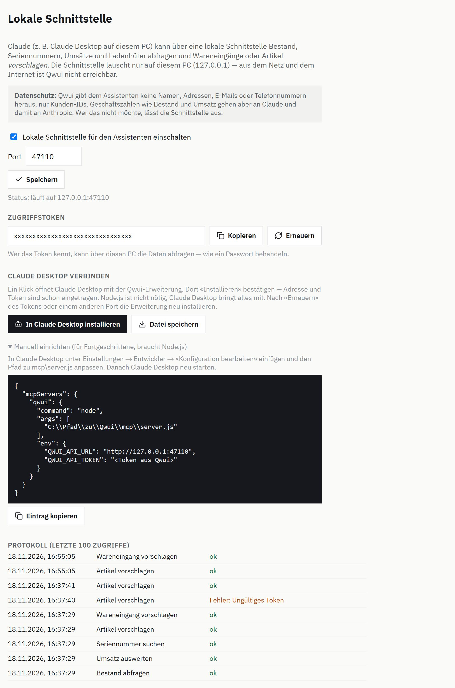
LM Studio führt Sprachmodelle direkt auf dem PC aus und nutzt ab Version 0.3.17 MCP-Werkzeuge. So arbeitet der Assistent ohne Cloud, ohne Abo und offline.
| Du brauchst | Wozu, woher |
|---|---|
| Windows-PC, 16 GB RAM empfohlen | Qwui und Modell laufen gleichzeitig; mit 8 GB ein kleineres Modell |
| LM Studio ab 0.3.17 | führt das Modell aus, spricht MCP (lmstudio.ai) |
| Node.js (LTS) | startet den Assistent-Server (nodejs.org); Probe: node -v |
| Modell mit Werkzeug-Aufrufen | Qwen3 8B (Q4, ca. 5 GB) bei 16 GB RAM, Qwen3 4B bei 8 GB. Grössere Modelle rufen Werkzeuge zuverlässiger auf. |
C:\Qwui\Qwui-Assistent.mcpb.Qwui-Assistent.zip umbenennen und nach C:\Qwui\assistent entpacken. Darin liegt server\index.mjs, ohne weitere Abhängigkeiten.{ "mcpServers": {
"qwui": {
"command": "node",
"args": ["C:\\Qwui\\assistent\\server\\index.mjs"],
"env": { "QWUI_API_URL": "http://127.0.0.1:47110",
"QWUI_API_TOKEN": "HIER-DAS-TOKEN-AUS-QWUI" } } } }
LM Studio startet den Server selbst. Bei Werkzeug-Aufrufen fragt LM Studio nach; «immer erlauben» lässt es durchlaufen (änderbar unter App Settings → Tools & Integrations).
Du bist der Assistent des Fachgeschäfts «Billard-Fachgeschäft Muster». Du arbeitest mit der Software Qwui über die Werkzeuge des Servers «qwui». Antworte auf Deutsch (Schweiz), kurz und mit konkreten Zahlen. Regeln: - Fragen zu Artikeln, Bestand, Seriennummern, Umsatz, Ladenhütern und Sicherungen beantwortest du immer mit einem Werkzeug, nie aus dem Gedächtnis. Erfinde keine Zahlen. - Neue Artikel und Wareneingänge legst du mit «artikel_vorschlagen» bzw. «wareneingang_vorschlagen» an. Das sind nur Vorschläge: Sag danach, dass sie in Qwui unter «Vorschläge» mit «Übernehmen» gebucht werden. - Du siehst keine Namen, Adressen oder E-Mails von Kunden, nur Kunden-Nummern. - Datumsangaben als TT.MM.JJJJ, Beträge als «CHF 1'290.00». Heute ist der [Datum einsetzen].
Ein lokales Modell kennt das heutige Datum nicht. Für Umsatzfragen den Zeitraum nennen oder das Datum im Systemprompt eintragen.
| Du fragst | Werkzeug → Ergebnis (Demo-Daten) |
|---|---|
| Welche Queues haben wir, und wie viele sind verfügbar? | artikel_suchen → Liste mit Mengen |
| Wie viele PQ-PRE-01 sind an Lager, mit welchen Seriennummern? | bestand_abfragen → Stückzahl und Seriennummern |
| An wen ging die Queue PR-2401, und wann? | seriennummer_suchen → 18.11.2026, Quittung 0001, Kunden-ID (kein Name) |
| Wie viel Umsatz vom 1. bis 30. November 2026? Was lief am besten? | umsatz_auswerten → Summe, Anzahl, offene Rechnungen, Top 10 |
| Welche Artikel liegen seit über 90 Tagen ohne Verkauf? | ladenhueter |
| Lege an: Queue-Etui Leder, schwarz, KO-06, Köcher & Koffer / Köcher, 94.90 Fr., mit Shop-Text. | artikel_vorschlagen → Vorschlag in Qwui |
| Wareneingang: zwei PQ-PRE-02, Seriennummern PL-3104 und PL-3105, je 357 Fr., Lieferschein 5133. | wareneingang_vorschlagen → Vorschlag in Qwui |
| Wann wurde zuletzt gesichert? | backup_status |
Claude ist deutlich leistungsfähiger als kleine lokale Modelle; die Werkzeug-Ergebnisse gehen dafür an Anthropic.
Öffnet sich Claude Desktop nicht: Datei speichern und die .mcpb per Doppelklick oder unter Einstellungen → Erweiterungen installieren. Die Erweiterung ist nicht signiert; die temporäre Datei mit Token löscht Qwui nach zehn Minuten.
| Werkzeug | Parameter | Ergebnis |
|---|---|---|
artikel_suchen lesend | suche, gruppe | Artikelnummer, Name, Gruppe, Preis, S/N-Pflicht, verfügbare Menge |
bestand_abfragen lesend | artikel (Nummer oder Name) | verfügbare Menge, Exemplare an Lager; mehrdeutig: Kandidaten |
seriennummer_suchen lesend | seriennummer | Status, Eingang, Verkauf, Quittung, Kunden-ID, retourniert |
umsatz_auswerten lesend | von, bis (JJJJ-MM-TT), gruppe | Summe, Anzahl Quittungen, offene Rechnungen, Top-10-Artikel |
ladenhueter lesend | tage (Vorgabe 90) | lange gelagerte Exemplare, Artikel ohne Verkauf |
backup_status lesend | – | letzte stündliche und tägliche Sicherung |
wareneingang_vorschlagen Entwurf | artikel, menge oder seriennummern[], einkaufspreis, bemerkung | Vorschlag «Wareneingang» |
artikel_vorschlagen Entwurf | name, preis, gruppe, artikelnummer, seriennummernpflichtig, shop_text | Vorschlag «Neuer Artikel» |
Eigene Programme auf demselben PC können die Schnittstelle direkt nutzen: GET /v1/health und POST /v1/tools/<werkzeug> mit den Parametern als JSON.
# PowerShell $h = @{ Authorization = "Bearer $env:QWUI_API_TOKEN" } Invoke-RestMethod -Method Post -Uri http://127.0.0.1:47110/v1/tools/umsatz_auswerten ` -Headers $h -ContentType "application/json; charset=utf-8" -Body '{"von":"2026-11-01","bis":"2026-11-30"}' → { "ok": true, "result": { "receiptCount": 3, "total": 2095.5, "openInvoices": 729, "topArticles": [ … ] } }
| Fall | Antwort |
|---|---|
| ohne oder mit falschem Token | 401, im Protokoll |
mit Origin-Header (aus einem Browser) | 403: keine Webseite kommt über den Browser an Qwui |
Host nicht 127.0.0.1/localhost mit eigenem Port | abgewiesen (Schutz vor DNS-Rebinding) |
| unbekannter Pfad, Body über 64 KB | 404, 413 |
Text mit Umlauten als UTF-8 senden, sonst wird aus «Köcher» «K?cher».
Die Windows-Version nimmt keine Verbindungen aus dem Internet an. Die Assistent-Schnittstelle ist aus oder nur auf 127.0.0.1.
Passwörter und Tokens verschlüsselt in geheim.bin, nie in Datenbank oder Sicherung.
AES-256-GCM mit eigenem Passwort. Der manuelle JSON-Export ist unverschlüsselt.
Passwort serverseitig, Sperre nach 100 Fehlversuchen in 15 Min., optional Cloudflare Access. Kein gegenseitiges Überschreiben.
E-Mail-Adressen nur mit Einverständnis. Shop und Assistent bekommen keine Kundendaten aus Qwui.
Quellcode unter AGPL-3.0 auf GitHub, jederzeit prüfbar.
| Problem | Lösung |
|---|---|
| QR-Rechnung lässt sich nicht einschalten | Unter Firma eine gültige CH- oder LI-IBAN eintragen (grüner Haken). Keine QR-IBAN. |
| Quittung wird nicht erstellt | Bei S/N-Artikeln ein Exemplar wählen oder scannen. |
| Scanner trägt nichts ein | Cursor ins Feld «Scannen». Unbekannte Nummer: Artikel anlegen bzw. Nummer prüfen. |
| E-Mail wird nicht versendet | Einstellungen → E-Mail → Test-Mail senden, Meldung lesen. Gmail: App-Passwort. Outlook.com geht nicht. |
| Sicherung «Nicht aktiv» | Haken, Zielordner und Backup-Passwort (zweimal), Speichern. |
| Shop: «lehnt das Token ab» / HTTP 503 | Token in Qwui ≠ QWUI_TOKEN im Shop / im Shop fehlt das Token oder ist kürzer als 16 Zeichen. |
| Bestellung erscheint nicht | «Bestellungen abholen» an? Adresse endet auf /api/qwui/feed? Bestellung bezahlt? Status unter Einstellungen → Shop. |
| «Bestellung(en) übersprungen» | Ungültige Menge oder kein Preis. Im Shop unter /admin prüfen. |
| LM Studio zeigt keine Qwui-Werkzeuge | Pfad in mcp.json mit doppelten Backslashes? node -v geht? Schnittstelle in Qwui an? |
| «Qwui ist nicht erreichbar» / «lehnt das Token ab» | Qwui läuft nicht oder Schnittstelle aus; Port prüfen / Token wurde erneuert, neu eintragen. |
| Modell antwortet aus dem Gedächtnis | «Nutze dafür das Qwui-Werkzeug.» ergänzen oder grösseres Modell. |
| Vorschlag lässt sich nicht übernehmen | Meldung lesen: Artikelnummer vergeben oder Seriennummern fehlen. |
| Web: «Daten wurden inzwischen geändert» | Ein anderes Gerät hat gespeichert: Neu laden, Eingabe wiederholen. |
eindeutige Nummer, auch im Barcode und im Shop
einzelnes Stück eines S/N-Artikels
Sortiment, Preis und Menge für den Shop
Bewegung für eine von Hand geänderte Stückzahl
Verkauf ohne Kundendaten, bis CHF 400
Standard für Werkzeuge von Sprachmodellen
Einzahlungsschein mit QR-Code
Zahlungsreferenz nach ISO 11649
Gegenbuchung beim Bearbeiten oder Löschen
Zufallsschlüssel, wie ein Passwort behandeln
Entwurf, gebucht erst nach Übernehmen
Shop-Adresse, an die Qwui den Feed schickt
Am besten in einer Übungskopie: Qwui-1.4.0.exe in einen eigenen Ordner (z. B. C:\Qwui-Uebung) kopieren und dort starten. Es entsteht ein eigener, leerer Datenordner. Vorher die normale Qwui schliessen.
CH93 0076 2011 6238 5295 7. Grüner Haken?Qwui bucht, was du bestätigst, und sonst nichts. Jede Lagerbewegung steht im Protokoll.
Der Shop zeigt, was Qwui weiss. Das Backup-Passwort gehört in den Passwort-Manager.